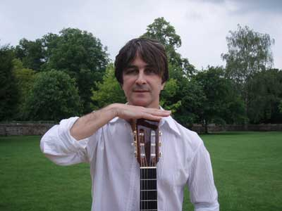
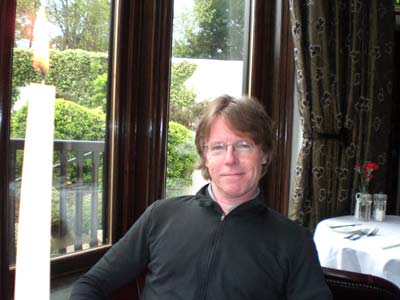
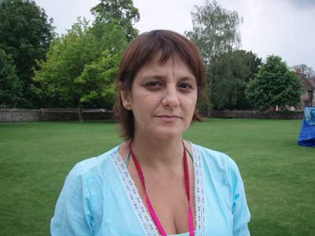
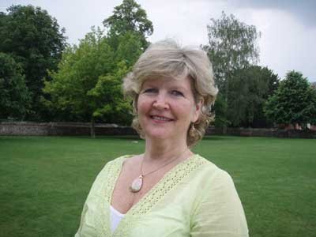
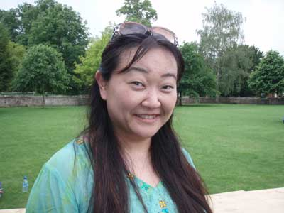

Principal
Quem somos
Agenda
Integrantes
Shows
Ensaios
Vídeos
Opiniões
Contato

Gui Tavares - brasileiro - Maestro
Adriana Rouaneti - brasileira - Contralto
Ana Flávia França - brasileira - Soprano

Gil Gilchrist - inglês - Tenor
Jane Clarke - inglesa - Soprano
João Carvalho - angolano - Bass
Julian Bommer - inglês - Bass
Larissa Litchfield - brasileira - Contralto

Laura Arantes - brasileira - Soprano

Linda Harkness - inglesa - Soprano
Linda Randall - chinesa - Soprano
Lizzie Orekoya - inglesa - Soprano
Marcos - brasileiro - Bass
Maria O'Connell - inglesa - Soprano
Mathews - brasileiro - Tenor
Mônica Borges - brasileira - Contralto
Rogério Corrêa - brasileiro - Bass
Silvana Vecchia - brasileira - Contralto
Simon Hutta - alemão - Tenor
Stephen Service - inglês - Tenor
Victoria Rebori - argentina - Contralto

Yukiko Takahashi - japonesa - Contralto
info@nossavoz.org
077 3793 8082 ou 020 7033 9177
Nossa Voz Choir © 2007